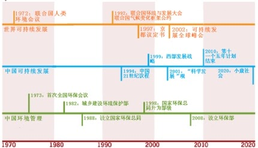

环保部雏形初具，然任重道远
(原文发于《中外对话》2008年9月18日)
文/何钢
成立环保部是中国积极改革政府职能的一个实例，何钢写道。但执行环境法律的能力尚有待提高。
2008年3月28日，中国环境保护部挂牌成立。正如其使命中声称，这个新的国务院部级机构将负责中国的环境管治。环保部的职责在于发展和组织环境保护；管理所有相关的规划、政策和标准；协调各个地区和各级政府，解决国家重大的环境问题。
成立环保部是过去几十年来为转变政府职能而进行广泛改革的一例。自1982年以来，五次大规模政府机构改革将政府部级机构数量从52个缩减为27个。由于公共部门的优先事项已经从发展经济转向管理和公共服务，最近一轮的改革旨在建立“小政府，大社会”。然而，只有维持当前的经济增长率并同时减少通货膨胀压力和保持中央政府的宏观经济表现，这种大胆的长期改革才有可能。中国政府还需要在发展、环境和社会稳定之间维持微妙的平衡。

经过30多年的快速经济增长和发展，中国在保护环境与自然资源基础方面正面临着前所未有的挑战。国家环境质量快速退化和自然资源消耗正威胁着中国这个世界上人口最多的国家的人民生活与健康，并威胁着其经济可持续发展的潜力。一些最紧迫的挑战包括：
空气质量： 布莱克史密斯研究所公布的十大污染城市有两个在中国。中国的三大城市群——北京-天津-唐山，长江三角洲和珠江三角洲——都面临着重大的污染问题。广州呼吸疾病研究所所长钟南山警告称，由于广州市的空气污染，50岁以上的多数人都有“黑肺”。由于奥运临近，北京从7月20日开始实行汽车单双号限行办法，以控制在城市道路上行驶的汽车数量，为运动员和来宾改善空气质量。
水污染： 蓝绿藻的大量繁殖导致今年和去年夏天位于长江三角洲的太湖出现严重的水污染。根据《2006年中国环境状况公报》，全国745个地表水监测断面中劣五类水质的断面比例为28%——劣五类是中国《地表水环境质量标准》的最低级别。十多年来，中央政府在淮河和滇池污染治理项目上投入了大量资金，成效甚微。根据淮河水利委员会2007年的报告，淮河44个主要支流中的46个断面只有43.2%通过了水质检测。
气候变化：中国《气候变化国家评估报告》的结果表明，在过去一个世纪里，平均气温上升了0.5-0.8°C（比全球平均升幅略高），温度上升大多是在最近50年观测到的。在中国沿海，海平面在过去的50年里年均上升了2.5毫米。中国的高山冰川也在退却，而且正呈加速趋势。国家的地理和气候条件已导致极端事件频发，不过，中国生态系统的复杂性和脆弱性以及三个最大城市群和工业中心都位于沿海地区，导致了最近极端事件的加剧。在农村地区，农业产出到2030年可能减少5-10%。《政府间气候变化专门委员会第四次评估报告》警告称，如果气候按预测继续发生变化，中国将成为全球受影响最大的地区之一。
环保部副部长潘岳估计，中国平均每三年发生两次环境事件，危及政府建设“和谐社会”的目标。2005年，围绕着圆明园的争议，环境领域首次举行正式的公开听证。为了节水，圆明园在公园湖底铺设防渗膜，但使该地区的生态系统和附近的历史文化遗址因此受到影响。听证之后，该项目被叫停。
从那以后，中国人越来越多地参与到了环保运动中来。环保意识的增强和对环境正义的关注，导致了广泛的环境抗议。2007年6月，厦门市民对在附近计划建设化工厂举行示威——厦门是一个东南沿海城市，以其环保意识和生态旅游业而闻名。上海居民在2008年1月抗议修建磁悬浮延长线，成都市民在5月进行了反对建设石化工厂和炼油厂的示威。随着2008年5月《政府信息公开条例》的发布，信息透明和公众参与的呼声将继续增加。
随着要求采取行动确保环境质量的呼声越来越高，政府作出了各种回应。例如，耗资数十亿美元清除淮河污染——淮河是中国的主要河流之一，但是这种努力没有取得实际的进展。其中的问题在于权力分散：地方环境主管官员由地方行政首长提名和指派，所有地方环境改善项目完全由地方政府出资。尽管中央政府在环境治理方面可能决心很大，但是地方上不愿意依然是个大问题。地方政府缺乏执行成熟项目的动力和能力。中国高级领导人常常承诺“每个人都能喝上清洁水和呼吸清洁空气”，但是这个听起来简单的目标实现起来绝非易事。
环保总局升格为环保部迈出了希望的一步，但这不能保证就会有成果。尽管30年来其地位上升了，环境管理部门在“内阁”中依然较弱。环保部副部长潘岳发起的“环保风暴”既是提升环保意识的国家运动，也是环保部不得不使用比较有创意的方法来巩固其在政府中权力的一个例子。鉴于“绿化”GDP的复杂性，环保部在推出新的“绿色GDP”核算体系上遭遇挫折。这些挫折表明，环保部尚不具备其他核心部委——例如，中国宏观经济管理机构国家发改委——的效率和力度。
为了更好地了解中国的环境管理体制，不妨将之与美国和欧盟的类似体制作个比较。
组织结构： 学习美国的经验，中国于2006年设立了五个区域监察办公室，努力促进区域性协调。但是，与美国制度不同，省是中国政治和经济的基层单位，省级环保机构人员不由中央政府指派，而且由地方政府全额拨款。这种脱节实际上使得省级“环保官员”变成了没有实权的专业人员。五个区域监察办公室对当地情况几乎毫无影响力，因为他们依然没有权力协调省级环保部门。
人员： 美国人口为3.5亿，美国环保署拥有1.7万名以上的职员，其中不包括外聘合同工。在人口四倍于美国以及人均污染高得多的中国，环保部在北京只有大约300名职员，五个区域监察办公室每个大概有30名职员。包括附属机构和研究所在内，总职员数大概能达到2,600人。附属的研究机构提供一些重要的支持，但环保部仍然弱小，缺乏决策能力和资金来源。
执行： 中国中央级的规章制度不具有美国或者欧洲法律同样的效力。作为主要手段之一，中国中央政府发布五年规划，制定全国总体目标，并委托给地方政府；政府职员的升迁取决于他们实现这些目标的程度。当前的“十一五规划”包含两个主要环境目标：能效提高20%和主要污染物减少10%。但是，只要中国的升迁制度仅仅基于GDP的增长，政府控制污染的任何指令都会是次要的，任何环境目标都不会得到充分的实施。
前方的道路
北京大学环境工程与科学学院教授张世秋在2007年召开的首次中国环保体制改革会议上表达了她的担忧。她表示，鉴于中国面临着环境破坏最为严重的时期，而且还将在近期内持续下去，中国当前正处于环境管理体制转型最关键的时期。她重点强调了不断发生的环境事件，尤其是增加环境风险和威胁国家环境安全的严重污染事故。她同时还指出，环境危机最近引发了社会冲突，并影响了社会的稳定。
她认为，有效的环境权力结构需要清晰的界定和说明。她建议，环境管理应该从“部门管理”转向“公共管理”，以人为本，把公共资源管理和公众参与纳入到管理中去。她还呼吁环境管理体制从“地方”向“区域”转变，“从单一污染物控制向多种污染物控制策略转变”，“从末端管理向生命周期管理转变，注重经济和能源消费的调整”，利用更多的市场经济政策为企业和社会参与者提供激励，特别是要把损失赔偿机制、生态服务报酬机制和污染/资源税收机制结合起来。
作为主要的咨询机构，中国环境与发展国际合作委员会汇集了高层领导人和国际专家。在第五次年会上，中国环境执政能力课题组发布了一份报告，建议中国在四个主要问题领域加强环境执政能力：
提高政府在执行环境法律和落实环境目标方面的能力，提高政府在控制环境污染和管理自然资源方面的能力；
通过奖优罚劣来鼓励工商企业在环保方面采取更加积极的态度，推行工业生产和危险事故防范的最佳实践；
向社会提供更多的环境和自然资源信息，提高政府决策的透明度，并让各利益相关方、非官方组织以及普通大众了解、参与相关决策及执行活动；
在国内及国际环境保护和自然资源管理方面提高政府的规划能力和政策的连贯性。提高这种能力并将其纳入到其他政府部门和机构绩效表现的期望中去。
世界银行也承担了支持中国环境管理的项目。世界银行认为，尽管环保部在很多方面取得了成功，环境整体恶化尚未得以逆转。他们认为，由于广泛的社会经济变革带来了新的和紧迫的环境挑战，中国的环境管理变得越来越复杂。主要由环保部负责的环境管理因为正在进行的机构重组以及纯粹因为国家的幅员之大而变得更加复杂。然而，国家很多自然资源和环境服务已经不堪重负，中国对有效环境管理的需要正变得愈发重要。不过，最终“只有地方和中央政府机构大力扩大和加强协作机制，才能应对这一挑战性议题。”